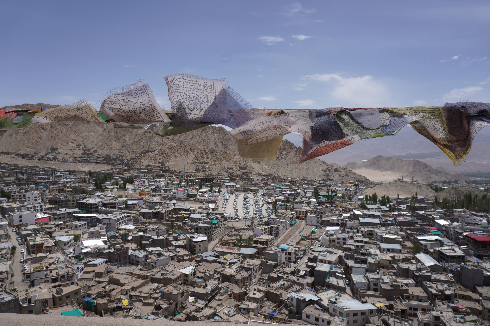
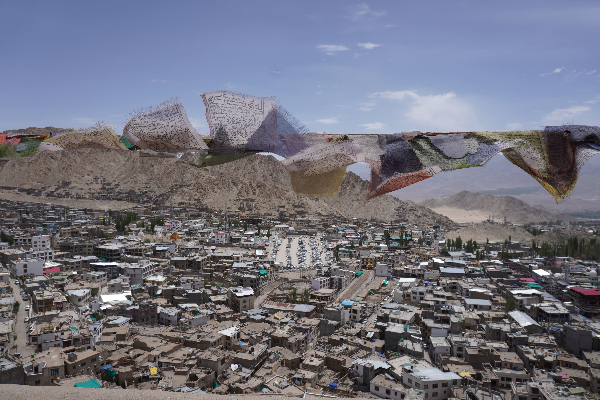

Experiences in Ladakh which are an absolute must have. With the 10 Days Best of Ladakh Tour package,
we give you the option to explore best of Ladakh. Enjoy the pictuereque view of Sun rise on beautiful
Pangong Lake lake, Hemis, Thikse Monastery and Shey Palace.
What do you expect to see on this wonderful journey?
- Leh Market
- Leh Palace
- Likir Monastery
- Magnetic Hill
- Mesmerising Moon Landscapes
- Lamayuru Monastery
- Color Changing Pangong Lake
- Thiksey Monastery
- Shey Palace
- Camel Safari
- Magnificent View Of Nubra Valley
| Date |
Places To Be Visited |
| Day 1 |
Leh Arrival |
| Day 2 |
Hall of fame, Gurudwara Pathar Sahib, Magnetic Hill, Sangam, Lamayuru |
| Day 3 |
Alchi, Likir-Leh Palace, Shanti Stupa |
| Day 4 |
Leh, Khardungla pass, Nubra Valley (Hunder and Diskit) |
| Day 5 |
Nubra, Shyok, Pangong Lake |
| Day 6 |
Pangong, Changla pass, Hemis, Thiksey, Shey, Leh |
| Day 7 |
Leh, Tso Moriri Lake |
| Day 8 |
Tso Moriri, Mahe Bridge, Chumathang, Leh |
| Day 9 |
Free/buffer day |
| Day 10 |
Leh Airport Drop |


 
